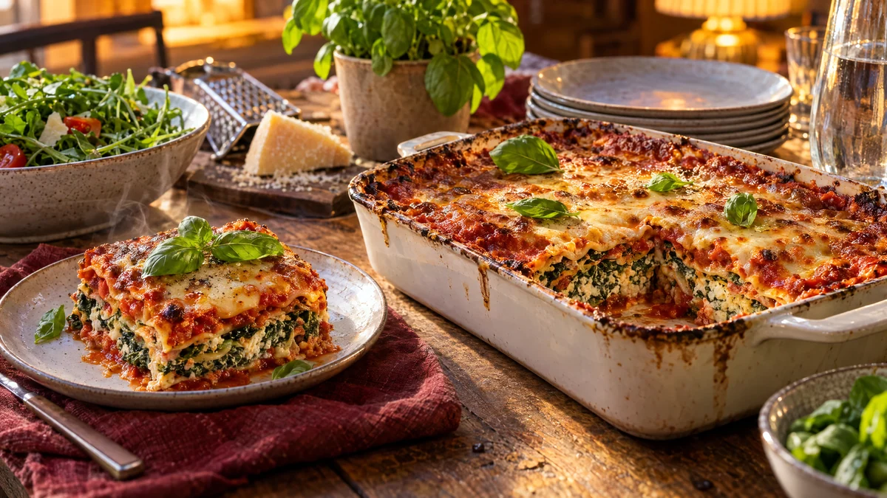

RESTFEST · RECEPTHuvudrätt
Spenatlasagne med keso och tomatsås
En påse fryst spenat, två burkar keso och ett paket lasagneplattor. Lagren av klargrön spenat- och kesofyllning och djupröd tomatsås gräddas under ett gyllene, bubblande ostlock. Ingen béchamel att stå och röra i, bara en saftig, mättande lasagne som blir ännu godare dagen efter.
- Förberedelse
- 25 min
- Tillagning
- 45 min + 10 min vila
- Portioner
- 6
- Nivå
- Nybörjare
 Det här behöver du
Det här behöver du
JÄMFÖRT MED DIN KYL
Tryck på + vid det du behöver köpa.
Tomatsås
Spenatfyllning
Lasagne
Gör så här
- Hacka löken och vitlöken och fräs dem i olivoljan i en kastrull på medelvärme i 5 minuter. Rör ner tomatpurén, krossade tomater, vatten, oregano, socker, salt och peppar. Låt sjuda i 10 minuter. Såsen ska vara ganska lös, plattorna suger åt sig vätska i ugnen.
- Sätt ugnen på 200 grader.
- Krama ur spenaten ordentligt, gärna i en kökshandduk. Blanda den med keso, ägg, muskot, salt och peppar.
- Bred ut en fjärdedel av tomatsåsen i botten av en ugnsform, ca 20 × 30 cm. Lägg ett lager lasagneplattor.
- Bred ut hälften av spenatfyllningen och en fjärdedel av såsen, och lägg ett nytt lager plattor. Upprepa med resten av fyllningen, en fjärdedel sås och ett sista lager plattor.
- Bred resten av tomatsåsen över de översta plattorna, ända ut i kanterna, och strö över osten.
- Grädda i mitten av ugnen i 40–45 minuter, tills osten är gyllene och plattorna är mjuka när du sticker i en kniv. Låt lasagnen vila i 10 minuter före servering.
Dekoration och servering
- Toppa med färska basilikablad precis före servering.
- Skär upp den första biten med en vass kniv och en bred spatel, så att de gröna, vita och röda lagren syns.
- Servera med en grönsallad med vinägrett.
- Lasagnen kan göras en dag i förväg och gräddas direkt från kylen. Räkna då med 10 minuter extra. Den går också att frysa.
Mått och ugnstemperaturer
Måtten är svenska (dl, msk, tsk, krm). Ugnstemperaturerna gäller vanlig ugn med över- och undervärme; med varmluft, sänk med 20 grader.